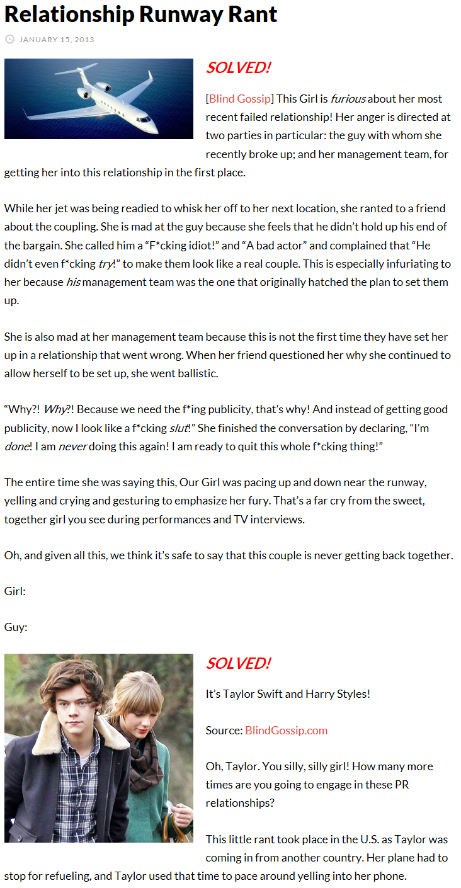
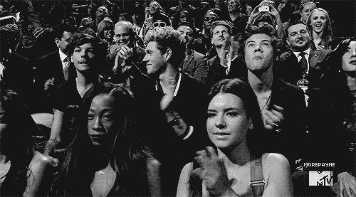

8. Trouble Trouble Trouble
1月15号，Blind Gossip又出了一则爆料
【机场跑道上的咆哮】SOLVED!
这姑娘对她最近一段失败的恋情很愤怒！她的愤怒指向两方面：刚和她分手的那家伙，以及她的管理团队，都怪他们让她卷进这段关系。
当她的飞机正在为飞向下个目的地做加油准备时，她愤怒的向她朋友抱怨，她受够他了，她觉得他没有遵守协议，她说他是一个“蠢货”一个“蹩脚的演员”，还抱怨他“压根就没打算好好演”成一对真CP的样子。最让她火大的是，明明是他的团队最开始提出合作计划的。
她同样恼火自己的管理团队，这已经不是他们第一次把她丢进一个坑爹的关系中了。当她的朋友（通过电话）问她为什么继续让自己陷入其中，她发飙了：
“为什么？！为什么？！因为我们TMD的需要公众形象，这就是为什么！结果好形象一点没落着，所有人现在看我就像是个SLUT!”，“我受够了！我再也不干这事了！我TM现在就撂挑子不干了！”
在她说这些的时候，她在跑道附近来回走动，怒吼、哭喊配合肢体动作传达她的愤怒，这跟她演出中、电视采访中的甜美形象判若两人。
鉴于以上这些，我们很确定这对CP is never getting back together.
噢，Taylor，傻姑娘，你到底要参合几次PR？
这事发生在她从国外飞回美国时，她的飞机需要停下来加油，她用这段时间对着电话咆哮。
（下面还有说，Taylor，你应该意识到你的保镖们不是隔音玻璃，他们虽然把你围起来了，声音还是会传出来的……）
1月15号的爆料，TS从8号之后就一直在LA没有离开，那么这个回国途中在机场加油时的咆哮，就是她1月3号或4号“和HS分手”后，从度假地英属维京群岛坐飞机回美国时发生的。
TS和HS性格很相似，他们都讨厌PR（没准还讨厌彼此），不同之处在于TS年长一些，她和自己团队的关系也比较紧密，即使不情愿还是会好好配合完成工作，HS当时只有18岁，不愿意就是不愿意，本来身上就背着同性绯闻，还出工不出力，搞得这段PR从第一天出街开始就有人一路说他们是假的，一路被人笑话。笑话无所谓，只要能在大众心中塑造一个良好的公众形象就行，但结果是从Kennedy开始到HS，TS的形象一路崩溃，直到现在都还有人【亲切的】称她为GJ。
她会发飙就不难理解了。
本来事情到1月初宣布两人break up就该结束，但是
1月5号TS发推："…'til you put me down"，把IKYWT和HS联系在一起；
1月10号TS发推说："back in the studio. Uh oh…"，媒体开始起哄，TS要给HS写歌了（这天她写的是All You Had to Do Was Stay）；
2月10号，格莱美，TS在开场演出WANEGBT时把原歌词中念白部分的
So he calls me up, and he's like, "I still love you" and I'm like, I mean this is exhausting. You know, like we are never getting back together. Like, ever
改成了
So he calls me up, and he's like, "I still love you" and I'm like, I'm sorry, I'm busy opening the Grammy's, and we are never getting back together. Like, ever
媒体哗然，纷纷评论说TS用英伦腔说了那句"I still love you"，这是赤裸裸的在diss HS呀！这是HS想复合被TS拒绝了呀！
他们难道不知道这句话本来就是WANEGET的固定念白吗，这首歌清楚无误的是唱Jake和她分手复合又分手TS不想再复合的。
在WANEGET的CD原声中，"I still love you"这句她就是故意用搞怪的腔调说出来的，而且一直都是这么说的，我把WANEGET的CD原声和格莱美上她唱的音频做了个剪辑，你们对照着听听看，有区别吗，亲们，有区别吗？！怎么就变成英伦腔了？怎么就变成她在diss HS了……
她唯一做的改动只是把念白中某句无关紧要的话改成了配合格莱美开场的词而已。
这不是世纪抓马，这是世纪冤案啊
（如果媒体的清一色报道是其中一方或者双方在背后炒作发酵故意这么说，那这就不是冤枉，是猪一样的队友和坑爹坑娘的合作伙伴）
反正一顿骂一顿黑又是少不了了。
8月25号，VMA颁奖，TS的IKYWT获得Best Female Video，在获奖感言中她说了这么一段：
"I want to thank the fans because I tweeted about this a lot, I really wanted this. I also want to thank the person who inspired this song because he knows exactly who he is, because now I've got one of these"
导播还很识相的把镜头切到了1D成员身上：
Niall先向右看看Louis，再向左看看Harry，一脸同情
Louis像生吃了13只苍蝇
Harry笑看风云……
（VMA结束后TS和HS在后台还有合影，私人恩怨应该是没有的，都是为了工作）
插播一段：还想起一件事，如果导播把镜头切给HS是想表达IKYWT是写HS的，那15年BBMA上Little Big Town和Faith Hill合唱Girl Crush，当唱到"I got a girl crush"时导播把镜头切给了TS是想表达什么……细思极恐
镜头切过去时TS刚好唱到"girl crush"，看到摄像机对着自己，TS尴尬闭嘴，CH直接转头（老子不认识这个人），这一段简直太欢乐了。
这下媒体炸锅了，1D粉也炸了。
又一场世纪抓马。
别忘了，在第一章我们就说过，I Knew You Were Trouble不是写HS的。
RED刚发行时，媒体粉丝猜IKYWT是写Jake或者Mayer，什么时候风向变成了写HS呢，第一次是HS纹了和MV男主手上一样的船型纹身（先有MV后有纹身哟）；第二次是1月5号TS发推til you put me down让人猜想这首歌和HS有关；第三次是VMA颁奖感言，观众直接认定这歌就是写的HS。
TS说过IKYWT是写HS吗，当然没说过，她最多就是给点暗示误导你们。
"I've never named names, so I feel like I still have a sense of power over what people say—even if that isn't true, and even if I don't have any power over what people say about me. The fact that I've never confirmed who those songs are about makes me feel like there is still one card I'm holding."
"我从未明说过我的歌写给谁，这让我感觉我能掌控人们言论的方向——即使他们所说并非事实，即使我没法左右他们对我的看法。但是，我从未指明我的歌是写给谁，这一点让我觉得，我手里仍然握着一张底牌。"
看下RED的几首单曲
1单WANEGBT，8月13号发行，写Jake;
2单Begin Again，10月1号发行；
3单IKYWT，11月27号发行；
4单22，3月12号发行，写Ashley、Dianna、Claire、Selena；
5单Red，6月21号发行，写Jake；
6单EHC，7月16号发行；
Begin Again和EHC由Conor Kennedy买单了，虽然现在我们知道和他一点关系都没有。
IKYWT，虽然一开始媒体粉丝都猜是写Jake或Mayer，但最终TS将舆论引向了HS，明明也和他无关。
她为什么这么做？
可能一：HS伤了她的心，拉倒吧划掉；
可能二：TS和她的团队恼火HS不好好PR，让他替这首歌买单当做补偿；
可能三：从TS暗示IKYWT是写HS，HS没有反击，1D团队也没有反击来看，这是双方团队共同协商的结果，HS和Louis就算再不爽也无可奈何；
Blind Gossip爆料中说的是1D团队先找上TS，这是很有可能的，翻回去看2012年4月的剧情，TS没有提过HS，也没被问及过HS，更没关注HS；是HS关注的TS，1D说起TS，HS被问到TS。这可以看做1D团队单方面做的试探或者炒作，TS方既没否认也没配合。
双方正式合作是从2012年10月开始。
1D为什么找上TS
1D需要打开美国市场，在Haylor开始后，1D的确成为了当时唯一一只打进美国市场的英国男团；
Larry（Harry Styles和Louis Tomlinson）的同性绯闻需要抑制，哪怕Louis有女友，HS也被打造成womanizer的形象，他们之间的同性绯闻从没断绝；
年底是1D发新专的季节，所以1D有“冬日女友”的传统，每年到了年末，团员们就开始各自传绯闻了。2015年底真搞笑，Louis被“喜当爹”，Zayn和Gigi，Niall和Selena，HS和Kendall又“搞到一起”，实际上……
TS接受1D合作邀请的理由一样
她也是年底发新专，需要宣传；
她也需要一个“男朋友”作掩护；
回顾2012年，TS都被传过哪些绯闻男友：
2月，Zac Efron，一起为动画片配音，电影宣传，PR
3月，Tim Tebow，为TS和DA公开成为朋友搭桥，PR
4月，Mark Foster，TS和DA第一次被狗仔拍到2天后，TS和他一起吃饭传绯闻，PR
5月，Will Anderson，TS参加他生日party，只是朋友，媒体乱写
5月，Ed Sheeran，合作写歌，只是好朋友，媒体乱写
7月，Patrick Schwarzenegger，Kennedy家最先的人选后来换成Conor，PR
7-8月，Conor Kennedy，PR
11-12月，Harry Styles，PR
我印象中还有，但是不记得了，我记得的、能数出来的就有8个，没一个是真的，一大半都是PR公关行为，听黑粉说TS那年有十几个男朋友，天哪，我总算明白八十几个男朋友的谣言是怎么来的了，1年都能传出十几个，7年做个乘法……
这名声还能好得了吗？
boy-crazy，man-eater，series dater，problematic person……
PR的初衷都是好的，但是对一个一直以正面形象示人的年轻女歌手来说，一个接一个炒作绯闻男友太不合适了，除非有什么必须这么做的理由。再加上Kennedy和HS这两段“官方恋情”，从人选（都只有18岁）到时机（一个结束另个马上开始）到方式（细节太多槽点），全都不合时宜，最终导致她形象崩塌，影响恶劣。
不管事实真相如何，TS和HS在2012、2013年都付出了沉重的代价
IKYWT像是一个烙印永远刻在了HS的身上，向人们宣告他是一个不负责任的大玩家、花花公子；
而TS，不知道要花多少年的时间才能洗清2012-2013因为不当的PR而被媒体被世人重重涂在她身上的污名；
现在回头看看她在12年3月份写the Lucky One的创作背景，她预感到的感到恐惧的事，在之后终于还是一一发生了
It kind of talks about some of my fears, through telling the story of other people that I was inspired by.
它通过讲那些使我受到启发的人物故事，讲述了我的一些恐惧
But you know, more than their stories being told, I'm pretty much singing about what I'm scared of in that song.
但你知道，比起说她们的故事，我更多的是把我的恐惧唱出来
Ending up kind of caught up in this whole thing and lonely and feeling misunderstood.
最后我被整个事情所纠缠，感觉孤独、被误解（歌词中还有被利用）
And feeling like, when people think you're lucky that you're really not
感觉像是，别人觉得你是幸运儿，其实你并不是
So it kinda expresses my greatest fear of having this not end up be fun anymore. Having it end up being a scary place.
所以它表达出我最大的恐惧就是，害怕事情发展到最后变得不再有趣，最后发展到令人恐惧的地步
It's a story song and it's something I'm really proud of, because it kind of goes to a place that I'm terrified of.
所以这是一首有故事的歌，我为这首歌感到骄傲，因为它写出了我心中的恐惧
SO SHAME ON ME NOW
I'M LYING ON THE COLD HARD GROUND
TROUBLE TROUBLE TROUBLE